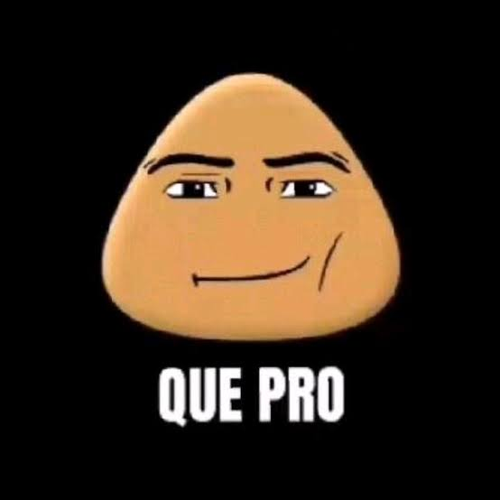
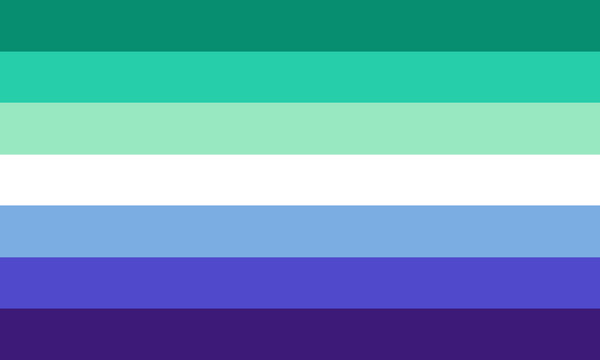

Hejmpaĝo
Mia Interretero (Blogo)
Lastaj Neŭronoj
Tik Tokoj

Mia Interretero
Saluton kaj Bonvenon al Mia Interretero, mia persona Blogo
Hola y bienvenidos a Mia Interretero, mi blog personal
Saluton, mi nomiĝas Ernesto, kaj mi estas Meksikano
Mi kredas ke esperantujo bezonas aferojn kiel blogojn,
videojn, librojn, muzikaĵojn, ktp. por ke novajn homoj volos lerni esperanton.
Do… mi faros kion mi povos. Mi aldonos mian «sablan grajnon» por
pligrandigi esperantujon.
Mi esperas vi ŝatos kion mi skribos.
Hola, mi nombre es Ernesto y soy Mexicano
Creo que el Esperanto necesita cosas como blogs,
videos, libros, canciones, etc. para que la gente quiera aprenderlo.
Entonces... haré lo que pueda. Yo pondré mi granito de arena para
hacer más grande al Esperanto
Espero les guste lo que escriba
Blogoj/Blogs
Blog: Pri Glatuloj/Sobre los gays
